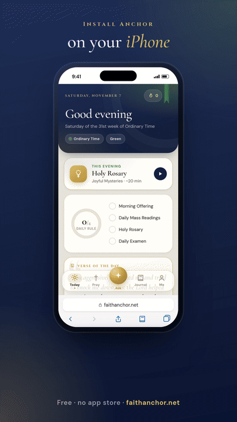
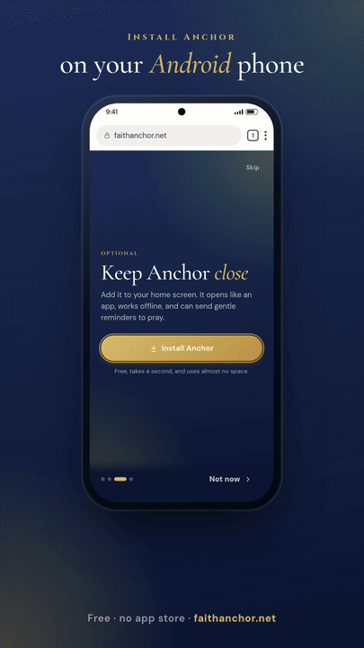

What is Anchor?
A free daily companion for Catholic prayer: the Rosary bead by bead, the Divine Mercy Chaplet, today’s Mass readings, the saints, Lectio Divina, the Daily Examen, a prayer journal, and Ask Anchor for questions about the faith.
It’s an independent project made by William Cain. It isn’t an official app of the Church or of any diocese.
Is it really free? Who pays for it?
Yes. No ads, no subscriptions, no paywalls. The server, the AI and the hosting do cost money each month, and they’re paid for by people who choose to chip in on Ko-fi. Donating is completely optional and doesn’t unlock anything.
How do I put Anchor on my home screen?
iPhone or iPad: open faithanchor.net in Safari, tap the Share button (the square with an arrow; in newer versions of iOS, tap ••• first), scroll down, tap Add to Home Screen, then Add.
Android: open it in Chrome and tap Install when Anchor offers it, or open Chrome’s ⋮ menu and tap Install app (or Add to Home screen).
Computer: in Chrome or Edge, click the install icon at the right of the address bar. In Safari on a Mac, choose File → Add to Dock.


The same steps are in the app under Me → About → Install Anchor.
I opened the link in Instagram, Facebook or TikTok and can’t install it
Those apps open links in their own built-in browser, which can’t install web apps. Tap the ••• or ⋮ menu at the top of the screen and choose Open in browser (or Open in Safari / Chrome), then follow the steps above.
Why don’t I get reminders on my iPhone?
On iPhone, notifications only work once Anchor is added to your Home Screen (iOS 16.4 or later). Open Anchor from the Home Screen icon, then turn on reminders in Me → Reminders and allow notifications when asked.
Do I need an account? Where is my data?
No account. Your journal, intentions, streaks and chats are stored only on your device. To move them to a new phone, use Me → Back up, then Restore a backup on the new device. Clearing your browser’s site data erases them, so back up now and then.
The Privacy Policy explains exactly what leaves your device and when.
Is Ask Anchor a priest? Can I trust its answers?
No, it’s an AI. It’s told to stay faithful to Scripture, Tradition and the Magisterium and to cite the Catechism, but it’s not a priest or a counselor and it can get things wrong. Check anything important with a priest or the Catechism itself. It can’t hear confessions or give absolution.
If you’re struggling or in danger, please reach out to someone you trust or a crisis line. In the US, call or text 988.
Ask Anchor says it has reached its limit for today
To keep Anchor free, the AI has a daily budget shared by everyone. When it runs out, Ask Anchor and “Help me pray” pause until tomorrow. Everything else (prayers, readings, your journal) keeps working.
Does Anchor work offline?
Yes, once it has loaded once. Prayers, the Rosary, your journal and any readings already loaded work without a connection. Ask Anchor, new readings and reminders need the internet.
Which Bible translation do the readings use?
The reading texts come from the Douay-Rheims translation. Each day also links to the official readings on the USCCB website, which use the New American Bible.
How do I report a problem or suggest something?
Email support@faithanchor.net, or use Me → About → Send feedback in the app. Every message is read.